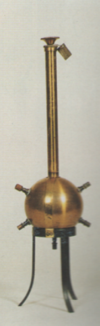

Apparecchio per la verifica del principio di Pascal
Scuola di provenienza: Istituto agrario "F. De Sanctis", Avellino
Settore: Idraulica
Costruttori: Sconosciuto
Materiali: Ottone satinato e ferro
Accessori: Nessuno
Stato di conservazione: Buono
Descrizione: È un robusto recipiente di ottone che consta di una parte sferica,nella quale sono praticati alcuni fori di piccolo diametro, e di un´appendice a forma di cilindro,entro la quale può scorrere a perfetta tenuta uno stantuffo. Riempito totalmente il recipiente di acqua,alla spinta dello stantuffo,il liquido fuoriesce con zampilli aventi le direzioni dei raggi della sfera passanti per i centri dei fori. Quindi la pressione esercitata sulla superficie si è trovata nei fori laterali in direzione perpendicolare della superficie sferica.